POG Gallery of Contemporary & New Media Art, 2022
website
As the Director of POG Gallery of Contemporary & New Media Art, I conceptualized, designed, and developed an online art gallery. I designed graphics, GIFs, and videos in the proess of developing the website utilizing HTML, CSS, and JavaScript. I also utilize varying game engines to develop the actual exhibitions so that they are navigable through a “web-based game” experience.
skills depicted in this project: branding, concept development, web design/development, multimedia production
Moisturizer Gallery, 2020-2021
website
As the Assistant Director of Art+Technology at Moisturizer Gallery, I spearheaded the development of the Moisturizer Gallery website which began hosting virtual exhibitions as a response to covid-19 restrictions.
I collaborated with the director on curating, designing, and developing virtual exhibitions. The website is reflective of Moisturizer's intention of being an experimental non-profit art gallery and community space. I pitched the idea of utilizing abandoned JCPenney stores as a constant conceptual design theme throughout the website. I also utilized the original drawing of the lotion bottle character from the Director and recreated it as a 3D model that greets viewers with their super groovy dance moves. The website was entirely designed and developed by myself.
skills depicted in this project: concept development, web design/development, 3D modeling, 3D animation
GaleréVR, 2019
VR exhibition space + digital residency space
“GaleréVR” is a virtual reality-based art gallery created in collaboration with MuséeVR. The purpose of this virtual space is to provide technology-based artists and designers the opportunity to exhibit work in a digital environment. This space is an opportunity for new forms of art production and consumption as it calls for innovative works that do not translate in physical spaces. The space is split into 4 exhibition spaces with a central lobby area along with hallways connecting each of the exhibition spaces. The environment was assembled in Unreal Engine.
I served as the Creative Director of this project. Collaborators: Mila Gajić and Dylan Burgess
skills depicted in this project: concept development, multimedia design, 3D modeling, VR
Digital Worlds Institute // DIG2632: Creating Mobile Games, 2020
video series
I collaborated with an instructional designer and professor from the Digital Worlds Institute at the University of Florida on conceptualizing intro/outro videos for the Creating Mobile Games course. I was the sole person working on creating the videos.
skills depicted in this project: concept development, video editing, sound design, 3D modeling, 3D animation, motion graphics
University of Florida's Artificial Intelligence Initiative, 2021
video series
As a co-lead multimedia designer for 7 courses as a part of the University of Florida's Artificial Initiative, I conceptualized, designed, and pitched the overall stylying for the course videos. I created templates and example projects in order to teach other members of the multimedia/video team to assist in editing video content.
skills depicted in this project: concept development, multimedia design, video editing, sound design, motion graphics
Space Drill Y21K, 2019
interactive arcade game
Space Drill Y21K is an interactive modded arcade game that was a part of the Broaden Your Sense of Normal project series/exhibition (see it on my art page :)). The piece functions as a preparatory tool for students and school faculty. The the piece is intended to build up the user’s cardio and train complex footwork to prepare them for outrunning a potential active shooter. Through this method of gamification of the larger issue of school shootings, we are paralleling American policies that promote ways of coping/surviving with issues (such as school shootings) rather than solving the underlying issues. The piece acts as an illustrated portrayal of the existing trivialization of the school shooting epidemic whether it be excusing, ignoring, or accepting the violent acts and/or the preceding red flags that lead to the actual act.
The arcade cabinet and dance platform were constructed from scratch using CNC machinery and laser cutting procedures. The game itself is a modded version of an open source DDR game that was re-designed with all original graphics. The songs on the machine are sourced from the video game Space Channel 5 (1999) and were renamed in the song catalog to be more referential to the contextual significance.
skills depicted in this project: concept development, game design, digital fabrication, 3D modeling, 3D animation
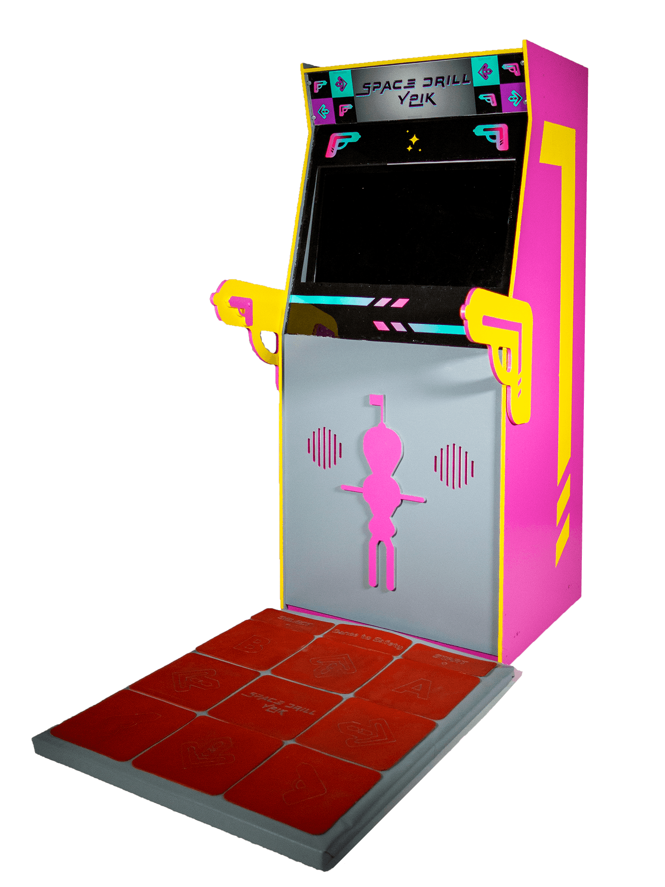
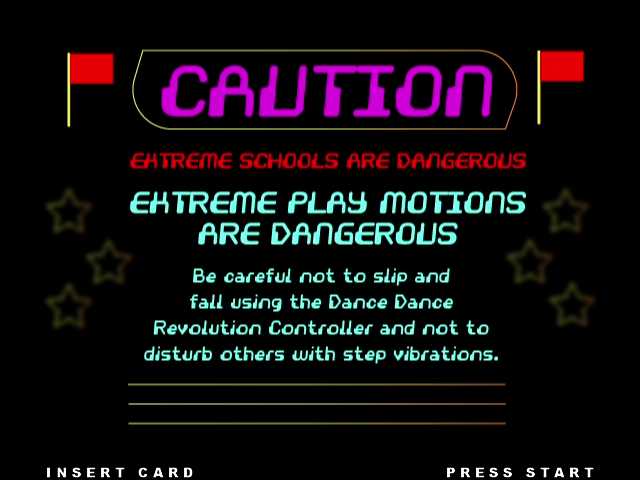
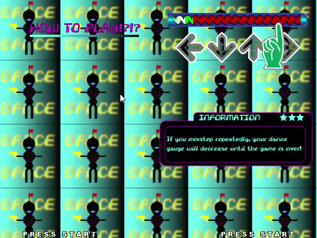
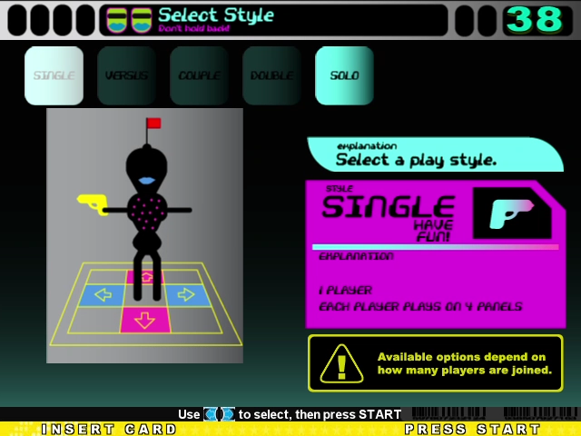
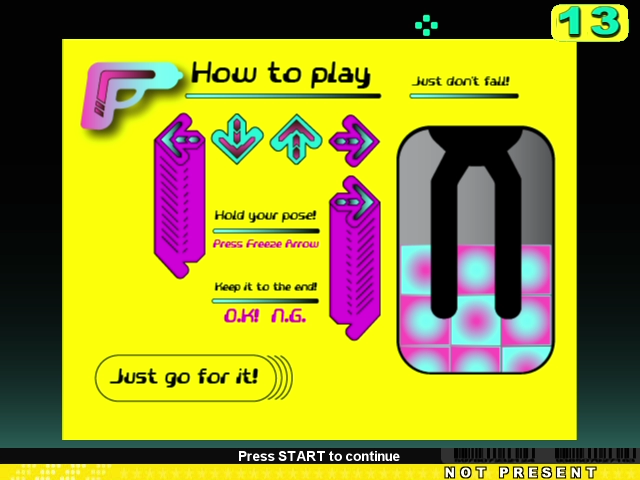
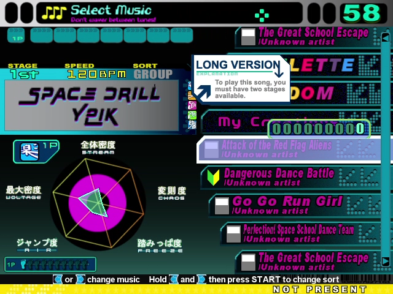
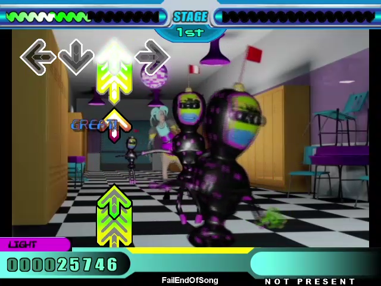
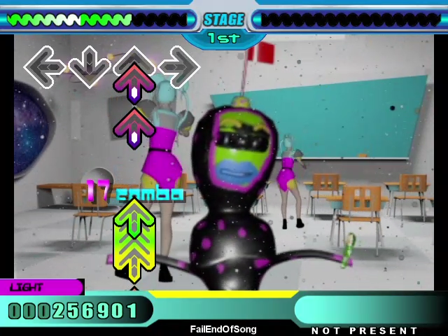
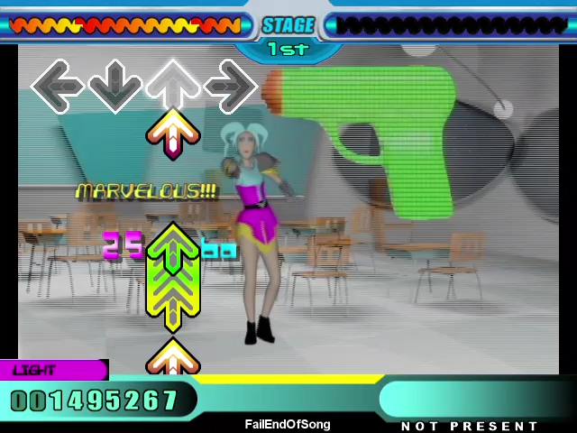
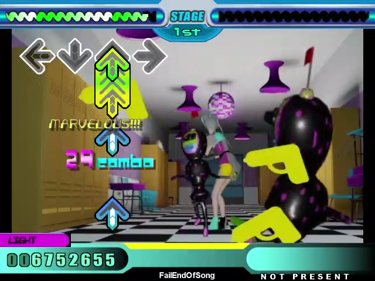
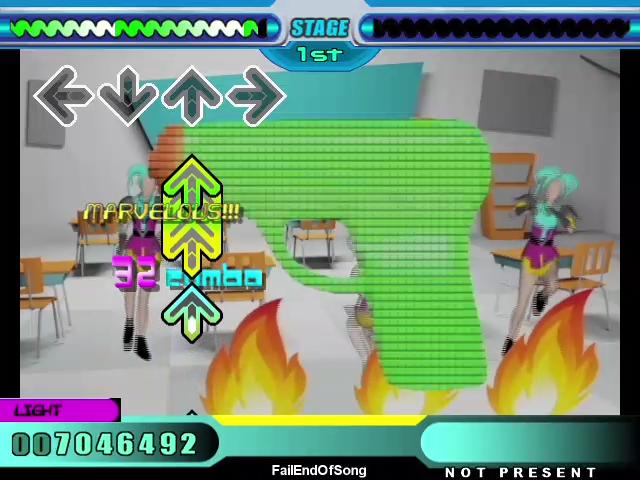
Broaden Your Sense of Normal, 2020
exhibition promotional material + design related art pieces (see more pics from the exhibition on my art page :))
The project is a series of works that reflect on the Gen Z experience of growing up amidst violence, mass anxiety, and uncertainty particularly in relation to the American school shooting epidemic. By intertwining experience, fiction, game culture, internet culture, and post-irony to explore themes of denialism, hopelessness, desensitization, inactivity, and persecutory delusion, the work is not only a reflection of the pair’s own experience in relation to American school shooting culture, but is a portrait of a generation who entered their school years with the rise of school shootings.
skills depicted in this project: concept development, graphic design, motion graphics, GIFs, 3D modeling, digital illustration
stick_tycoon.exe, 2019
4k video composite
Originally filmed on location using a RED camera. The footage was then processed through SynthEyes to create motion tracking points which were then exported as a 3D camera and 3D tracking points into Maya. The 3D scene was then created and composited into the environment.
Originally inspired by the Rollercoaster Tycoon game series, I was thinking about how one of the most common ways of playing the game is to build theme parks of pain and death. The visitors, programmed to be ignorant to their overseer's intentions, happily obliging to partake in riding a clearly unfinished rollercoaster track destined to crash and burn.
skills depicted in this project: concept development, 3D modeling, video compositing